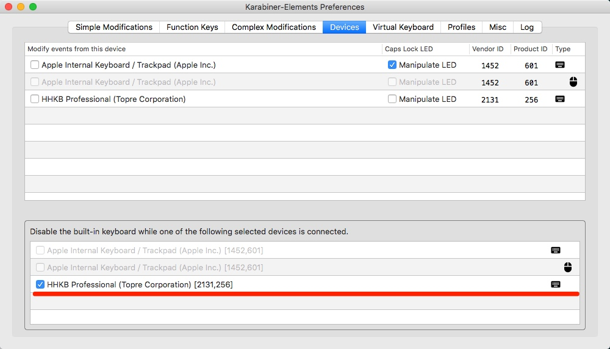
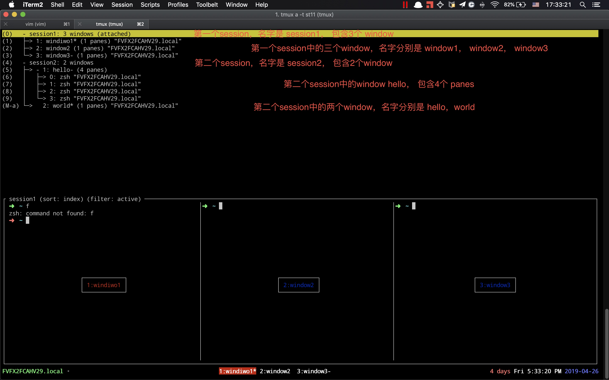

Tmux 入门
from 阿光的 tmux 的配置
外接键盘时禁用开启 mac 内置键盘
命令方式:
禁用键盘
sudo kextunload /System/Library/Extensions/AppleUSBTopCase.kext/Contents/PlugIns/AppleUSBTCKeyboard.kext/启用键盘 -- 启用失败
sudo kextload /System/Library/Extensions/AppleUSBTopCase.kext/Contents/PlugIns/AppleUSBTCKeyboard.kext/https://pqrs.org/osx/karabiner/history.html.en软件方式：
karabiner-elements 进入 Preferences-devices

session window pane 关系
session -> window -> pane

操作命令
ctrl-q ## tmux的命令 前置键，tmux的快捷键触发键
ctrl-q, r ## 重新载入 tmux 的配置文件，使其生效
session 操作
## 查看 所有连接
tmux ls
## 新建 连接
tmux new -s SessionName ## 新打开一个名字为 SessionName 的会话，并进入
tmux new -s SessionName -d ## 后台新打开一个名字为 SessionName 的会话，不进入
## 断开 连接
ctrl-q, d ## detached 当前会话，可重新 attach 进
ctrl-q, & ## 直接 exited 当前会话， `tmux ls`也找不到此会话
ctrl-q, x ## 重复执行，依次关闭当前 pane、window、session (相当于exited)
## 重命名
ctrl-q, $ ## 重命名当前 session 的名字
## 切换 session
ctrl-q, s ## 在当前 pane 显示所有 session
ctrl-q, s, hjkl, enter ## 在当前 pane 显示所有 session， hjkl:左下右上选择 session，enter 进入 session
window 操作
## 重命名
ctrl-q, , ## 重命名当前 window 的名字，显示在状态栏上
## 切换 window(不可跨sesison)
ctrl-1, 1~9 ## 将窗口切换到 1~9 对应的窗口
ctrl-q, ', num, enter ## 将窗口切换到 索引为 num 的窗口
ctrl-q, n ## 将 窗口切换到 下一个窗口
ctrl-q, ctrl-q ## 在最近使用的两个 window 中，来回切换
## 切换 window(可跨session)
ctrl-q, w ## 在当前 pane 查看 tmux 所有的 session，window，pane
ctrl-q, w, hjkl, enter ## 查看所有 session、window、pane、 hjkl: 左下右上选择， enter:进入所选择项的窗口
ctrl-q, f, enter, hjkl ## 进入所有 session、window、pane 面板，进行左下右上选择进入
pane 操作
ctrl-q, i` ## 在状态栏中显示当前 pane 的信息
ctrl-q, t` ## 在当前的 pane 中显示时间
ctrl-q, q ## 显示当前 window 中 pane 的编号
## pane变window
ctrl-q, ! ## 将当前 pane 变为新窗口
## 切换
ctrl-q, hjkl ## 在当前 window 下的 pane 中，hjkl:左下右上进行切换 分屏
ctrl-q, o ## 在当前 window 中，切换到下一个 pane
ctrl-q, ; ## 在当前 window 中，切换到最近使用的两个 pane 中的另一个
## 分屏
ctrl-q, % ## 将当前 pane 左右分屏
ctrl-q, " ## 将当前 pane 上下分屏
ctrl-q, z ## 多 pane 情况下，将当前所在的 pane 最大化显示，再执行一次，切换回之前的状态
ctrl-q, m ## 多 pane 情况下，凸显当前所在的 pane，在执行一下，取消凸显状态
tmux 中 vim 操作
ctrl-q, [ ## [: 进入 *vi* 状态
ctrl-q, [, hjkl ## hjkl: 左下右上移动光标
ctrl-q, [, v, hjkl, y ## (tmux) [:进入 vi 状态，v:从当前光标位置进入*选取*模式， hjkl:移动选取位置，y:复制前面选取的内容(放入粘贴板)(注:可以多次进行选取，复制入粘贴板)
ctrl-q, p ## 将粘贴板中的最新一条内容 粘贴出来
ctrl-q, shift+p = ctrl-q, = ## 进入粘贴板，查看所有粘贴内容
ctrl-q, shift+p, hjkl, enter ## 进入粘贴板，hjkl:左下右上选择粘贴记录，enter:选取当前记录粘贴到之前进入粘贴板的位置